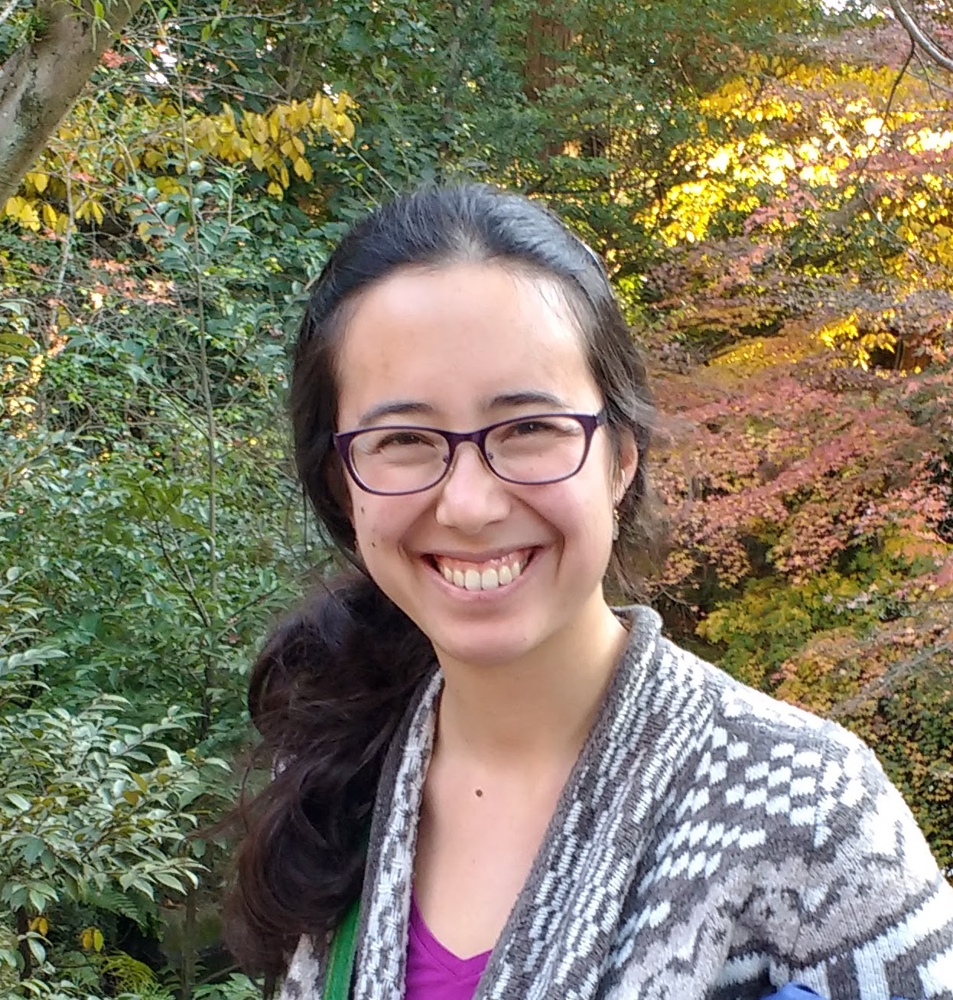

ah@astro.caltech.edu
 About
Research Projects
Publications
Talks
Teaching
Outreach
Science Policy
Other Interests
I am a third-year graduate student in Astrophysics at Caltech, working with Shri Kulkarni. I am interested in understanding the physics of stellar death by using wide-field time-domain facilities to searching for afterglows independent of prompt high-energy emission. Currently, I am preparing to use the Zwicky Transient Facility (ZTF) to search for elusive variations on the gamma-ray burst model: orphan afterglows and dirty fireballs.
Before coming to Caltech, I obtained a B.S. in Physics at MIT and spent three summers at the National Radio Astronomy Observatory (NRAO). At the NRAO, I worked with Scott Ransom on using millisecond pulsars in the globular cluster Terzan 5 to measure small-scale structure in the magnetic field of the Milky Way. I then spent a year on a Fulbright Scholarship at the Max Planck Institute for Astronomy (MPIA) in Heidelberg, Germany. At the MPIA, I worked with Hans-Walter Rix, Melissa Ness, and David Hogg on a data-driven approach to spectral modeling called The Cannon. By using The Cannon to reanalyze the LAMOST spectra of 450,000 giants, my work resulted in the largest catalog to-date of stellar masses, ages, and individual abundances (alpha enhancement, carbon, and nitrogen).
The most well-studied class of engine-driven relativistic explosions, classical long gamma-ray bursts (GRBs), may simply be one manifestation of a broader landcsape of phenomena that includes jets with a higher baryon loading fraction (``dirty fireballs") and jets that are viewed off-axis (``orphan afterglows"). Dirty fireballs and orphan afterglows have long been predicted to exist, but none have been found.
Discovering and characterizing the first dirty fireballs and orphan afterglows is one of the primary goals of the Zwicky Transient Facility (ZTF). ZTF is on the verge of first light: the survey will begin in January 2018 and run for three years. With its wide field of view and rapid survey speed, ZTF represents the best opportunity to date of finally uncovering (or severely constraining) these elusive events.
To prepare myself for this enterprise, I have been working on two projects. First, I am conducting a systematic search of the iPTF archive in order to characterize the foreground of false positives and develop a strategy for mitigation. This has resulted in a set of criteria that distinguishes known GRB afterglows from M-dwarfs and other false positives. Second, I have been using the Very Large Array (VLA) to follow up the mysterious population of short soft X-ray flashes discovered by the Monitor of All-sky X-ray Image (MAXI). The short duration, flux, hardness ratio, and lack of known counterpart to these events makes them promising candidate dirty fireballs.
A new generation of large-scale spectroscopic stellar surveys (e.g. SEGUE, APOGEE, Gaia-ESO) are measuring spectra for millions of stars across the Milky Way. Ideally, each spectrum would be used to "label" the corresponding star with its physical characteristics, such as its effective temperature and element abundances, and physical labels would be independent of the pipeline used to measure them. However, in practice, reliably and consistently determining labels from vast datasets of spectra constitutes a formidable modeling challenge. Currently, survey pipelines measure inconsistent labels for the same stars, because their methodologies are sensitive to properties that differ between surveys (e.g. wavelength range and resolution).
The Cannon is a new data-driven method for spectral modeling that can be used to bring two discrepant surveys onto the same scale. The Cannon requires no physical models, is very fast, and achieves comparable accuracy to existing survey pipelines but with significantly lower SNR spectra. It relies only on the existence of a subset of objects within a survey for which the corresponding labels are known and sufficiently cover the label space of interest.
I used The Cannon to reanalyze the spectra of 450,000 giant stars from the LAMOST survey. I improved the precision on existing measurements, and made the first measurements of several other parameters. Taken together, this work represents the largest catalog to date of stellar [alpha/M], [C/M], [N/M], mass, and age. This work resulted in two first-author publications, several co-author publications (including one recently submitted to Nature), and several invited and contributed conference talks. I also wrote a version of The Cannon for use by the community, along with detailed documentation and two tutorials.
Our position within the Milky Way gives us a unique vantage point: we can measure the galactic magnetic field shape and structure over several orders of magnitude, ranging from parsec to several parsec scales. The dense millisecond pulsar (MSP) populations in globular clusters (GCs) provide a unique opportunity to measure and map the galactic magnetic field on small (pc) scales, using the Faraday rotation technique.
The globular cluster Terzan 5 has the highest-known population of MSPs: radio flux measurements predict a much higher total than the current population of 35. Ransom (2007) used timing solutions for each MSP to calculate precise positions and precise DMs to demonstrate that differences in DM are dominated by electron density fluctuations in the ISM, rather than within the cluster.
As a summer student at the NRAO (a program funded by the NSF) I used nearly five full days of 1.5 GHz and 2 GHz Green Bank Telescope data to calculate precise rotation measures (RMs) for 24 of the 35 millisecond pulsars in Terzan 5. Dividing these values by the corresponding DMs enabled me to measure the mean line-of-sight galactic magnetic field strength to each pulsar. I found a 15-20% gradient in line-of-sight magnetic field strength across the cluster with fluctuations on the order of 0.1 microGauss and measured a structure function power law index of alpha = 1.13 +/- 0.15.
2 lead-author, 6 co-author
Ho, A. Y. Q., Rix, H.-W., Ness, M. K., Hogg, D. W., et al. 2017, Masses and Ages for 230,000 LAMOST Giants, via Their Carbon and Nitrogen Abundances, ApJ, 841, 40 arXiv:1609.03195
Ho, A. Y. Q., Ness, M. K., Hogg, D. W., et al. 2017, Label Transfer from APOGEE to LAMOST: Precise Stellar Parameters for 450,000 LAMOST Giants, ApJ, 836, 5 arXiv:1708.01758
Ting, Y.-S., Rix, H.-W., Conroy, C., Ho, A. Y. Q., & Lin, J. 2017, Measuring 14 elemental abundances with R=1,800 LAMOST spectra, accepted to ApJ, arXiv:1708.01758
Blagorodnova, N., et al. (including Ho, A. Y. Q.) 2017, iPTF16fnl: a faint and fast tidal disruption event in an E+A galaxy, ApJ, 844, 46 arXiv:1703.00965
Casey, A. R., Hogg, D. W., Ness, M., Rix, H.-W., Ho, A. Y. Q., Gilmore, G. 2016 The Cannon 2: A data-driven model of stellar spectra for detailed chemical abundance analyses , submitted to ApJ, arXiv:1603.03040
Ness, M., Hogg, D. W., Rix, H.-W., Martig, M., Pinsonneault, M. H., Ho, A. Y. Q. 2016, Spectroscopic Determination of Masses (and Implied Ages) for Red Giants, ApJ, 823, 114 arXiv:1511.08204
Hogg, D. W., Casey, A. R., Ness, M., Rix, H.-W., Foreman-Mackey, D., Hasselquist, S., Ho, Anna Y. Q. et al. 2016, Chemical tagging can work: Identification of stellar phase-space structures purely by chemical-abundance similarity, ApJ, 833, 262 arXiv:1601.05413
Ness, M., Hogg, D.W., Rix, H-W., Ho, A. Y. Q., Zasowski, G. 2015, The Cannon: A data-driven approach to stellar label determination, ApJ, 808, 16 arXiv:1501.07604
I enjoy public speaking, and have given numerous talks at academic conferences, our astronomy department's journal club, for amateur astronomy societies, and for the general public. On invitation, I taught a 2-day workshop on using The Cannon at Gemini Observatory in La Serena, Chile. I gave a talk and led a series of hands-on sessions, guiding the participants through Jupyter notebooks and datasets that I prepared.
This section lists my talks for the astronomy community. You can click here to see my talks for a general audience.
Dirty Fireballs and Orphan Afterglows:
A Broader Landscape of Relativistic Explosions
Presented Oct 2017 at the GROWTH Annual Meeting in Milwaukee, WI
The Cannon: Data-Driven Spectral Modeling in the Era of
Large Stellar Surveys
Presented at 5 international conferences (1 invited, 4 contributed)
Rotation Measures of Globular Cluster Pulsars as a
Unique Probe of the Galactic Magnetic Field
Presented at the MPIA Galaxy Coffee (Heidelberg)
and the NRAO lunch seminar (Socorro)
A tale of 115 photons: "A New, Faint Population of X-ray Transients"
(Bauer et al. 2017)
Presented on 14 April 2017
Ultraluminous X-Ray Bursts: A Challenge to High-Energy
Astrophysics Lore (Irwin et al. 2016)
Presented on 4 November 2016
Recognized as one of three "outstanding TAs" by the Office of Graduate Studies and the Registrar's Office. From the Registrar Newsletter: "Students described Anna as caring, considerate, and committed... as well as being extremely effective at explaining and summarizing the course material. The sentiments in this quote were echoed by several other students: 'She was consistently well-prepared for section, gave really good notes, and did a really good job of explaining potentially confusing material and clarifying misunderstandings. She was very in-tune with the difficulties students were having and did a very good job of resolving those difficulties.'"
I am a AAS Astronomy Ambassador and the co-coordinator for the astronomy department outreach program at Caltech.
I am the Vice-President of Science and Engineering Policy at Caltech (SEPAC).